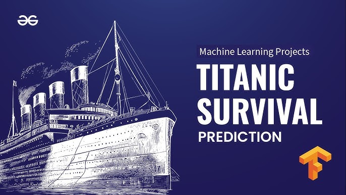

Machine Learning Project
↗A short description explaining what the project does, what problem it solves, and why it was interesting.
ROLE / Research, implementation & experimentation
Python · PyTorch · NumPy
Built and evaluated a machine learning system focused on improving model performance and interpretability.